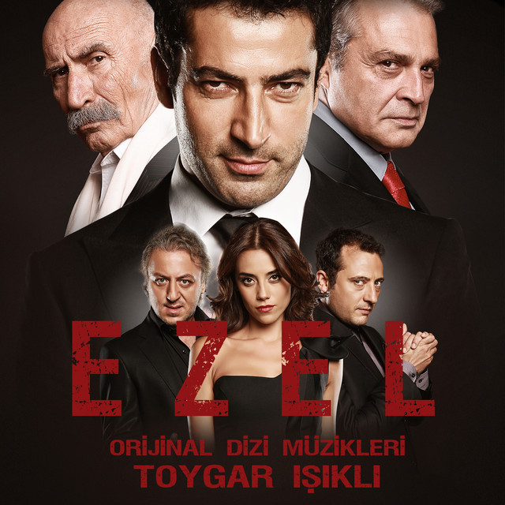

Murat SOMKAN
Hakkımda
Merhaba, ben Murat SOMKAN. İzmir'de yaşıyorum. Dokuz Eylül
Üniversitesi Elektrik & Elektronik Mühendisliği mezunuyum.
Bilim kurgu, fantastik, macera ve polisiye türlerinde dizi ve film
izlemekten keyif alırım. Fakat en sevdiğim dizi 'Ezel'dir.
İlgi Alanlarım
-
Filmler
-
Diziler
- Ezel
- Spartacus
- Witcher
- Game of Thrones
-
Kitaplar
Sevdiğim Diziler
EZEL

Ezel, yapımcılığını Ay Yapım'ın üstlendiği, yönetmenliğini Uluç Bayraktar'ın yaptığı,
senaryosu Kerem Deren ve Pınar Bulut ikilisi tarafından kaleme alınan aksiyon ve dram türündeki Türk televizyon dizisi.
Dizi 28 Eylül 2009 tarihinde Show TV'de yayınlanmaya başladı ve 20 Haziran 2011'de atv'de yayınlanan
71. bölümle final yaparak sona erdi. Toplam 2 sezondan oluşmaktadır.
Alexandre Dumas'ın Monte Kristo Kontu adlı romanından uyarlanmıştır.
Bu dizide beni en çok etkileyen Ramiz Dayı'nın hikayeleri,sözleri ve kurduğu zekice planların yanı sıra kaliteli
oyuncu kadrosunun rollerini en iyi şekilde oynayabilmiş olmalarıdır.